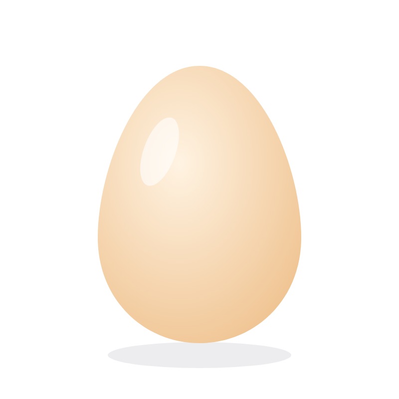
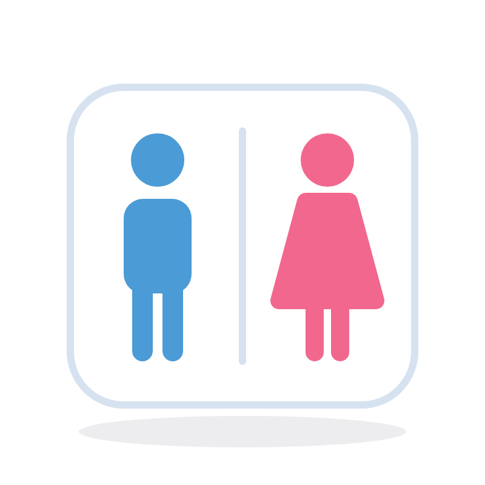
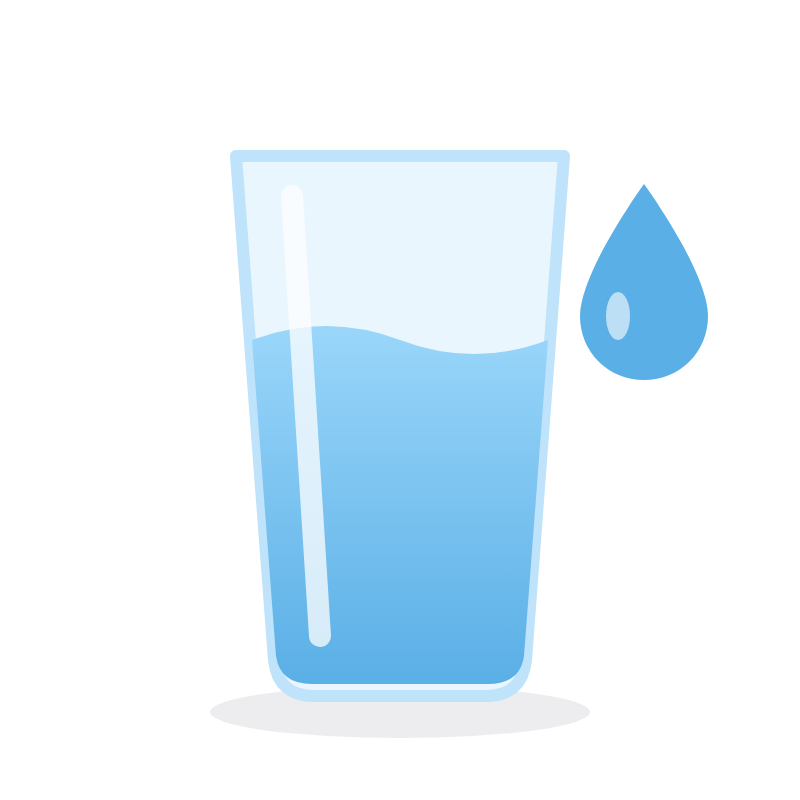
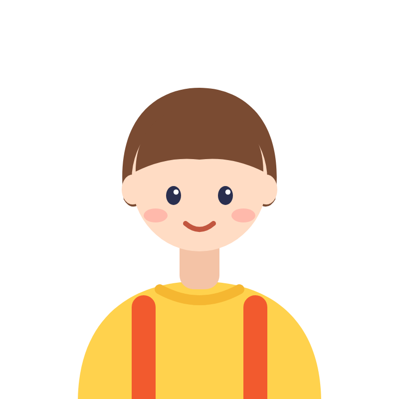

文法解説動画
冠詞
a / an と the の違い

文法解説動画
a / an と the の違い
BASICS
名詞の前に置く a / an / the のこと
a book

an apple

the sun
役割名詞を「どんな名詞として話しているか」を、小さく示してくれる
A / AN ・ MENTAL IMAGE
a / an ＝
たくさんある中の
「1つ」
1つ
A / AN ・ EXAMPLES

I bought a bag.
私はバッグを1つ買いました。

I saw a dog
in the park.
私は公園で犬を1匹見ました。

She is a teacher.
彼女は先生です。
I ate an apple.
私はリンゴを1個食べました。
よく使う場面まだ相手が「どれのことか」分かっていないものを、初めて会話に出すとき
A or AN ?
ルール次に来る単語の「音」で決まる
子音の音から始まる（母音以外の音）
a dog a university
a university母音の音から始まる（ア・イ・ウ・エ・オ に近い音）
an apple
an egg an hour
an hourPOINT
university
「ユニバーシティ」
u で始まるけど、音は「ユ」
→ 子音の音
She is a university student.
彼女は大学生です。
hour
「アワー」
h は発音しないので、音は「ア」
→ 母音の音
I waited for an hour.
私は1時間待ちました。
THE ・ MENTAL IMAGE
the ＝
「それ！」と
指させるもの
 それ！
それ！
1どの人・どの物のことか特定できるとき
2話し手と聞き手の両方が分かるとき
THE ・ EXAMPLES
Please close the door.
そのドアを閉めてください。
その場にいる人たちが
どのドアか分かっている

Where is the bathroom?
トイレはどこですか？
その場所にあるトイレを
指している
The sun is bright today.
今日は太陽がまぶしいです。
太陽は、どれのことか
特定できる
QUIZ ・ 1
QUIZ ・ 1 ANSWER
1回目初登場なので → a bag
2回目「さっきのバッグ」と分かるので → the bag
私はバッグを買いました。そのバッグは高かったです。
COMPARE
I saw a dog.
犬を1匹見ました。
The dog was cute.
その犬はかわいかったです。
I want to buy a book.
本を1冊買いたいです。
→ どの本かは、まだ決まっていない
I want to buy the book.
その本を買いたいです。
→ 話し手と聞き手が、どの本か分かっている
QUIZ ・ 2

QUIZ ・ 2 ANSWER
1回目初登場なので → a cafe
2回目「さっきのカフェ」と分かるので → the cafe
昨日、あるカフェに行きました。そのカフェはとても静かでした。
NEXT ・ 次回予告
そこで大切なのが…
数えられる名詞
可算名詞
数えられない名詞
不可算名詞



NEXT ・ 次回予告
1つ、2つ、3つ…と数えられる名詞
book
one book
two books
apple
one apple
two apples
dog
one dog
two dogs
student

one student
two students
1つだけならa / an を使える： a book ／ an apple ／ a dog
NEXT ・ 次回予告
ルール1つ、2つ…とそのまま数えられない → a / an は使えない
water
水
× a water
love
愛
× a love
happiness
幸せ
× a happiness
NEXT
数えられる名詞 / 数えられない名詞
Small steps, big changes.